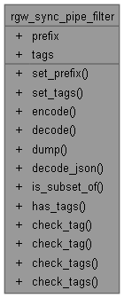
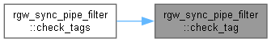
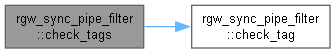
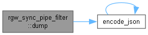
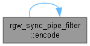
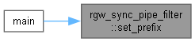
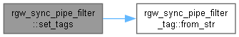
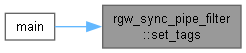

로딩중...
검색중...
일치하는것 없음
rgw_sync_pipe_filter 구조체 참조
#include <rgw_sync_policy.h>
rgw_sync_pipe_filter에 대한 협력 다이어그램:

Public 멤버 함수 | |
| void | set_prefix (std::optional< std::string > opt_prefix, bool prefix_rm) |
| void | set_tags (std::list< std::string > &tags_add, std::list< std::string > &tags_rm) |
| void | encode (bufferlist &bl) const |
| void | decode (bufferlist::const_iterator &bl) |
| void | dump (ceph::Formatter *f) const |
| void | decode_json (JSONObj *obj) |
| bool | is_subset_of (const rgw_sync_pipe_filter &f) const |
| bool | has_tags () const |
| bool | check_tag (const std::string &s) const |
| bool | check_tag (const std::string &k, const std::string &v) const |
| bool | check_tags (const std::vector< std::string > &tags) const |
| bool | check_tags (const RGWObjTags::tag_map_t &tags) const |
Public 속성 | |
| std::optional< std::string > | prefix |
| std::set< rgw_sync_pipe_filter_tag > | tags |
상세한 설명
rgw_sync_policy.h 파일의 225 번째 라인에서 정의되었습니다.
멤버 함수 문서화
◆ check_tag() [1/2]
| bool rgw_sync_pipe_filter::check_tag | ( | const std::string & | k, |
| const std::string & | v | ||
| ) | const |
◆ check_tag() [2/2]
| bool rgw_sync_pipe_filter::check_tag | ( | const std::string & | s | ) | const |
이 함수를 호출하는 함수들에 대한 그래프입니다.:

◆ check_tags() [1/2]
| bool rgw_sync_pipe_filter::check_tags | ( | const RGWObjTags::tag_map_t & | tags | ) | const |
rgw_sync_policy.cc 파일의 159 번째 라인에서 정의되었습니다.
160{
162 return true;
163 }
164
165 for (auto& item : _tags) {
167 return true;
168 }
169 }
170 return false;
171}
bool check_tag(const std::string &s) const
이 함수 내부에서 호출하는 함수들에 대한 그래프입니다.:

◆ check_tags() [2/2]
| bool rgw_sync_pipe_filter::check_tags | ( | const std::vector< std::string > & | tags | ) | const |
◆ decode()
| void rgw_sync_pipe_filter::decode | ( | bufferlist::const_iterator & | bl | ) |
rgw_sync_policy.cc 파일의 59 번째 라인에서 정의되었습니다.
60{
61 DECODE_START(1, bl);
64 DECODE_FINISH(bl);
65}
void decode(bufferlist::const_iterator &bl)
Definition rgw_sync_policy.cc:59
이 함수 내부에서 호출하는 함수들에 대한 그래프입니다.:
이 함수를 호출하는 함수들에 대한 그래프입니다.:

◆ decode_json()
| void rgw_sync_pipe_filter::decode_json | ( | JSONObj * | obj | ) |
rgw_sync_policy.cc 파일의 573 번째 라인에서 정의되었습니다.
◆ dump()
| void rgw_sync_pipe_filter::dump | ( | ceph::Formatter * | f | ) | const |
rgw_sync_policy.cc 파일의 567 번째 라인에서 정의되었습니다.
568{
571}
void encode_json(const char *name, const RGWBucketSyncFlowManager::pipe_set &pset, Formatter *f)
Definition rgw_admin.cc:2560
이 함수 내부에서 호출하는 함수들에 대한 그래프입니다.:

◆ encode()
| void rgw_sync_pipe_filter::encode | ( | bufferlist & | bl | ) | const |
rgw_sync_policy.cc 파일의 51 번째 라인에서 정의되었습니다.
52{
53 ENCODE_START(1, 1, bl);
56 ENCODE_FINISH(bl);
57}
이 함수 내부에서 호출하는 함수들에 대한 그래프입니다.:

이 함수를 호출하는 함수들에 대한 그래프입니다.:

◆ has_tags()
| bool rgw_sync_pipe_filter::has_tags | ( | ) | const |
rgw_sync_policy.cc 파일의 140 번째 라인에서 정의되었습니다.
◆ is_subset_of()
| bool rgw_sync_pipe_filter::is_subset_of | ( | const rgw_sync_pipe_filter & | f | ) | const |
rgw_sync_policy.cc 파일의 95 번째 라인에서 정의되었습니다.
96{
99 return false;
100 }
101 /* f.prefix exists, and this->prefix is either equal or bigger,
102 * therefore this->prefix also set */
103
105 return false;
106 }
107 }
108
109 /* prefix is subset, now check tags. All our tags should exist in f.tags */
110
113 return false;
114 }
115 }
116
117 return true;
118}
◆ set_prefix()
| void rgw_sync_pipe_filter::set_prefix | ( | std::optional< std::string > | opt_prefix, |
| bool | prefix_rm | ||
| ) |
rgw_sync_policy.cc 파일의 67 번째 라인에서 정의되었습니다.
69{
70 if (opt_prefix) {
71 prefix = *opt_prefix;
72 } else if (prefix_rm) {
73 prefix.reset();
74 }
75}
이 함수를 호출하는 함수들에 대한 그래프입니다.:

◆ set_tags()
| void rgw_sync_pipe_filter::set_tags | ( | std::list< std::string > & | tags_add, |
| std::list< std::string > & | tags_rm | ||
| ) |
rgw_sync_policy.cc 파일의 77 번째 라인에서 정의되었습니다.
79{
80 for (auto& t : tags_rm) {
81 rgw_sync_pipe_filter_tag tag;
83 tags.erase(tag);
84 }
85 }
86
87 for (auto& t : tags_add) {
88 rgw_sync_pipe_filter_tag tag;
90 tags.insert(tag);
91 }
92 }
93}
bool from_str(const std::string &s)
Definition rgw_sync_policy.cc:16
이 함수 내부에서 호출하는 함수들에 대한 그래프입니다.:

이 함수를 호출하는 함수들에 대한 그래프입니다.:

멤버 데이터 문서화
◆ prefix
| std::optional<std::string> rgw_sync_pipe_filter::prefix |
rgw_sync_policy.h 파일의 226 번째 라인에서 정의되었습니다.
◆ tags
| std::set<rgw_sync_pipe_filter_tag> rgw_sync_pipe_filter::tags |
rgw_sync_policy.h 파일의 227 번째 라인에서 정의되었습니다.
이 구조체에 대한 문서화 페이지는 다음의 파일들로부터 생성되었습니다.:
- D:/git/ceph/src/rgw/rgw_sync_policy.h
- D:/git/ceph/src/rgw/rgw_sync_policy.cc